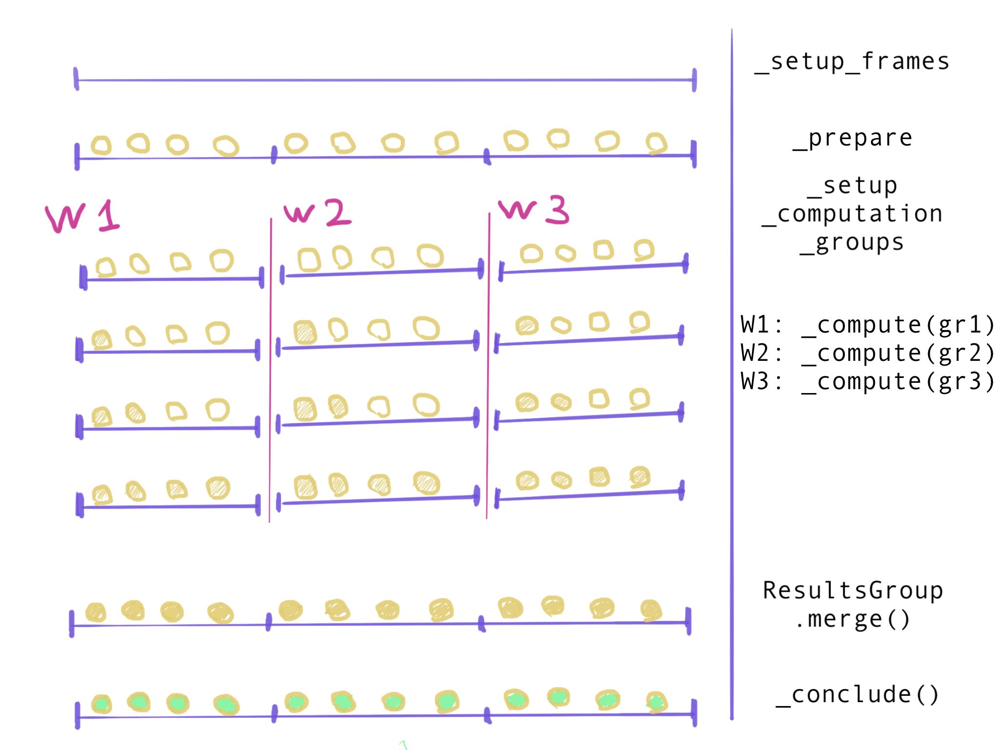
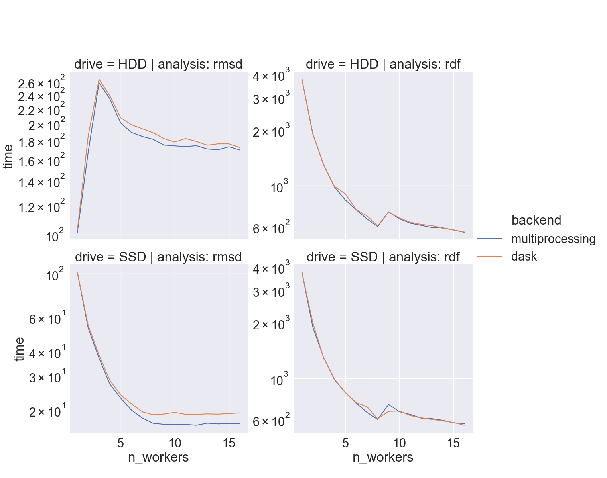
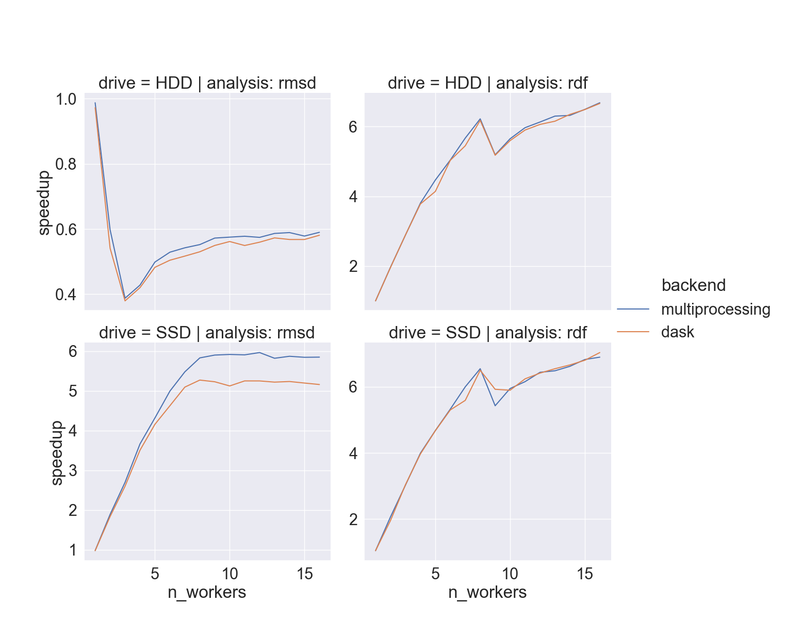
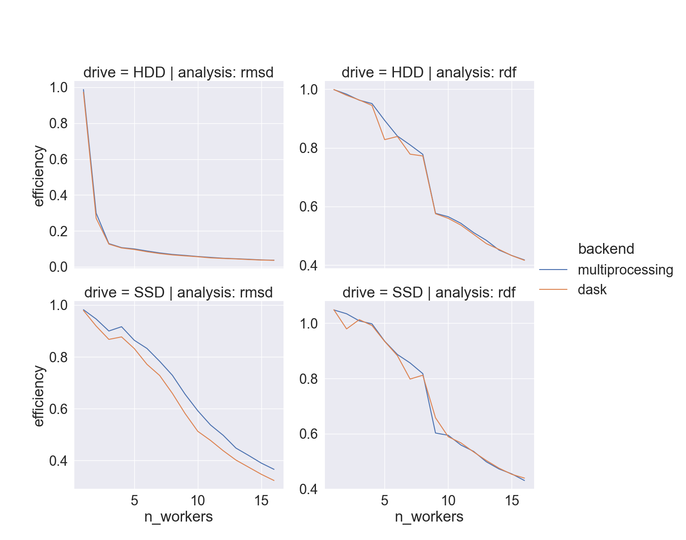
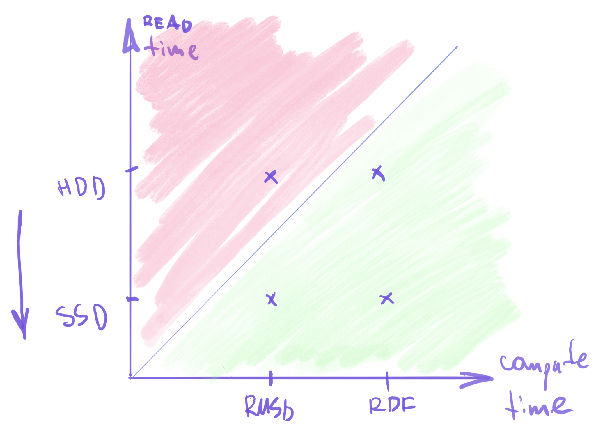
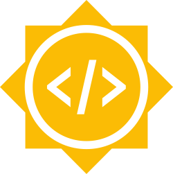

MDAnalysis UGM 2023: MDAnalysis Parallelization @ GSOC
Parallelization of MDAnalysis
Egor Marin, Google Summer of Code contributor
Motivation
T(insight) = T(simulation) + T(analysis)pmda: 30⭐️, 21🍴 (forks)- all MDAnalysis instances are parallelizable (courtesy @yuxuanzhuang)
Goals
Change AnalysisBase in a way that…
- Introduces multiple job support
- local – using multiprocessing?
- non-local – using dask?
- Does not break existing code (subclasses, dependencies, etc)
- Allows customization
- add your own execution backend
- write your own parallelizable classes
Sneak peak: results
>>> from MDAnalysis.analysis.rms import RMSD
>>> u, ref = ...
>>> % time long_run = RMSD(u, ref)
Wall time: 4 min
>>> % time long_run = RMSD(u, ref, backend='multiprocessing', n_workers=8)
Wall time: 50 sec
Sneak peak: results
>>> from MDAnalysis.analysis.rdf import InterRDF
>>> s1, s2 = ...
>>> % time long_run = InterRDF(s1, s2)
Wall time: 1 h
>>> % time long_run = InterRDF(s1, s2, backend='multiprocessing', n_workers=8)
Wall time: 8 min
Implementation
General AnalysisBase.run() protocol:
def run(self,
start=None,
stop=None,
step=None,
frames=None, ...):
# prepare frames -- check boundaries, setup reader
self._setup_frames(self._trajectory, start=start, stop=stop, step=step, frames=frames)
# initialize attributes with intermediate results
self._prepare()
# go through trajectory
for i, ts in enumerate(self._sliced_trajectory, ...):
self._single_frame()
# convert intermediate results into final ones
self._conclude()
Implementation
split-apply-combine:
- split all frames into groups
- process each group independently
- combine results
Implementation
Additional methods of AnalysisBase:
- “split”:
_setup_computation_groups() - “apply”:
_compute - “combine”:
_get_aggregator&ResultsGroup.merge() - housekeeping:
_configure_backend
Implementation

Implementation
Additional classes: ResultsGroup
class ResultsGroup:
def __init__(self, lookup: dict[str, Callable]): ...
def merge(self, objects: Sequence[Results],
require_all_aggregators: bool = True) -> Results:
...
Implementation
Additional classes: ResultsGroup
>> from MDAnalysis.analysis.parallel import ResultsGroup, Results
>> group = ResultsGroup(lookup={'mass': lambda values: np.mean(values)}
>> obj1 = Results(mass=1)
>> obj2 = Results(mass=3)
>> group.merge([obj1, obj2])
{'mass': 2.0}
Implementation
Additional classes: ResultsGroup
# skip attributes you don't want to aggregate
>>> lookup = {'mass': ResultsGroup.float_mean, 'trajectory': Trajectory}
>>> group = ResultsGroup(lookup)
>>> objects = [Results(mass=1, trajectory=None), Results(mass=3, trajectory=Trajectory(...))]
>>> group.merge(objects, require_all_aggregators=False)
{'mass': 2.0}
Implementation
Additional classes: BackendBase
from MDAnalysis.parallel import BackendBase
class CustomBackend(BackendBase):
def __init__(self, some_resource):
self.some_resource = some_resource
def apply(self,
func: Callable[T, R],
computations: list[T]) -> list[R]:
results = [
self.some_resource.do_compute(func, task)
for task in computations]
return results
Implementation
Additional classes: BackendBase
>>> backend_instance = CustomBackend(some_resource=...)
>>> my_run = RMSD(u, ref)
>>> my_run.run(backend=backend_instance, unsafe=True)
Implementation
Conditions for the backend=...
Subclass.is_parallelizable() == Truebackend: str|BackendBase- if
str, one of built-in backends (multiprocessing/dask) - if
BackendBasesubclass, explicitly sayunsafe=True
- if
Add to your subclass
Example: RMSD
from MDAnalysis.analysis.parallel import ResultsGroup
class RMSD(AnalysisBase):
@classmethod
@property
def available_backends(cls):
return ('serial', 'multiprocessing', 'dask',)
@classmethod
@property
def is_parallelizable(self):
return True
def _get_aggregator(self):
return ResultsGroup(lookup={'rmsd': ResultsGroup.ndarray_vstack})
How fast
- full-atom
xtc(“lysozyme in water”) - two different drives,
hdparm:- HDD: 180 MB/sec
- SSD: 460 MB/sec
- i9-9900K CPU @ 3.60GHz, 8 cores/socket
How fast



When should I use it
Definitive answer: benchmark it yourself!
%%timein jupyter notebookstep=MANYorstart=0, stop=10_000to achieve ~1-2 minute runtime with serial scheduler

When should I use it
YourClass.is_parallelizable()for your class_single_frame()slower than reading from disk
Future features
- 🔜 add to all subclasses
- have separate issues for complicated ones?
- 🔜 add tutorials
- how to use parallel backends
- how to implement your own backend subclasses
Future features
- 🤔 add distributed support
- rebrand
pmdainto MDAKit - focus on parallel filesystems, etc
- rebrand
- 🤔 add shareable memory trajectories
- pre-load trajectory & analyze it
- efficient for practically all subclasses
- 🤔 add
AnalysisCollection(ht @PicoCentauri)- one frame read exactly once
Acknowledgements
- Google Summer of Code 2023 program

Acknowledgements
- Mentors:
- Yuxuan Zhuang @yuxuanzhuang
- Oliver Beckstein @orbeckst
- Rocco Meli @RMeli
- 💫 Paul Smith @p-j-smith
- all contributors🫶